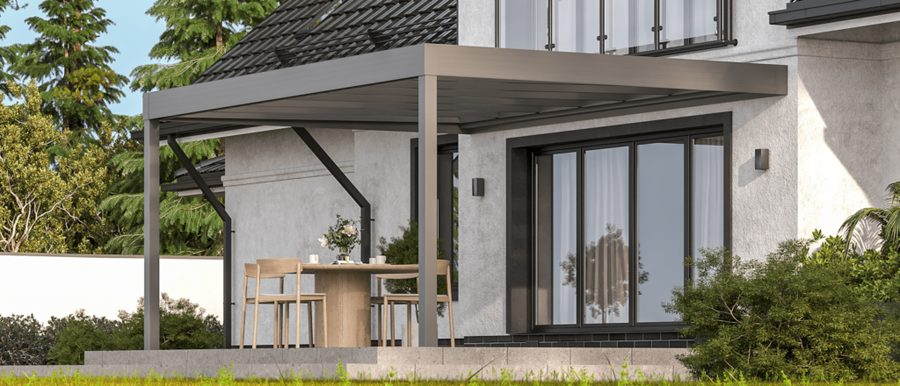

Unsere Modelle
Terrassenüberdachung – unsere Modelle
Alle Produkte werden maßgefertigt, CE-zertifiziert und mit Statiknachweis geliefert.

Terrassendach TDS
Das TDS ist unser Bestseller – und das aus gutem Grund. Klare Linien, robuste Aluminiumprofile, verfügbar mit Polycarbonat- oder Glasdach. Passt an jede Wand, steht freistehend, lässt sich erweitern. Wir fertigen exakt auf Ihr Maß – keine Standardlösungen vom Regal.
- Aluminium-Profile, pulverbeschichtet
- Standardfarben inklusive: Anthrazit (RAL 7016), Weißaluminium (RAL 9006), Graualuminium (RAL 9007), Reinweiß (RAL 9010)
- Wunschfarbe (weitere RAL-Farben) gegen Aufpreis möglich
- Verglasung: 8 mm VSG-Glas (bis 88% Lichtdurchlässigkeit) oder 16 mm Polycarbonat (bis 70% Lichtdurchlässigkeit)
- Wandanbau oder freistehend
- Erweiterbar mit Schiebeelementen & Markisen
- 10 Jahre Herstellergarantie · CE-zertifiziert
- Statiknachweis Wind- & Schneelasten inklusive

Flachdach SkyView
Flach, modern, beeindruckend. Das SkyView gibt Ihrer Terrasse einen Charakter der bleibt. Innenliegendes Gefälle – von außen unsichtbar, technisch perfekt. 8 mm VSG-Sicherheitsglas ist Standard. LED und Lautsprecher auf Wunsch. Für alle die etwas Besonderes wollen.
- 8 mm VSG-Sicherheitsglas inklusive – klar (88% Licht, 36dB Schallschutz) oder opal (63% Licht, blickdicht)
- Optional: LED-Beleuchtung & Lautsprecher
- Wandanschluss, Eck-, Nischen- oder XXL-Variante
- Schiebeelemente in Polycarbonat, Glas oder Alu
- 10 Jahre Herstellergarantie · CE-zertifiziert
- Statiknachweis inklusive
Erweiterungen & Abschlüsse
Stirnseiten, Schiebeelemente & Abschlüsse
Ihre Terrassenüberdachung muss nicht offen bleiben. Wir liefern und montieren alle gängigen Seiten- und Stirnabschlüsse – vom einfachen Festelement bis zur motorisierten Glasschiebetür. Alles passend zum Profil Ihrer Überdachung, maßgefertigt. Zum Aufklappen anklicken:
Der klassische Abschluss – fest montiert, winddicht, in Glas oder Polycarbonat. Schützt vor Wind und Regen von der Seite, ohne die Optik zu beeinträchtigen. Auch mit integrierten Fenstern zum Öffnen erhältlich.
- Verglasung: Glas oder Polycarbonat
- Mit oder ohne integriertes Fenster
- Passend zu allen Profil-Farben der Überdachung
- Als Stirnseite oder Seitenelement montierbar
- Winddicht, witterungsbeständig
Maximale Flexibilität: Die Glasschiebetür lässt sich lautlos zur Seite schieben – für freien Zugang im Sommer und vollständigen Schutz wenn das Wetter umschlägt. Einzeln oder als Mehrfach-Schiebeanlage erhältlich.
- Einzel- oder Mehrfach-Schiebeanlage
- Verglasung: ESG-Sicherheitsglas oder VSG
- Leichtgängige Alu-Schiene, wartungsarm
- Passend zu TDS, SkyView und anderen Systemen
- Kompatibel mit allen Profilfarben
Velaris-Lamellen als verschiebbares Seitenelement – einsteuerbar per Fernbedienung. Steuert Licht, Sichtschutz und Belüftung gleichzeitig. Kann geöffnet, gekippt oder vollständig verschoben werden. Die eleganteste Lösung für den Seitenabschluss.
- Einstellbarer Neigungswinkel der Lamellen
- Verschiebbar: Kaskadensystem platzsparend
- Gleichzeitig Licht-, Sicht- und Windschutz
- Motorisierung auf Wunsch
- Kombinierbar mit Velaris-Dach
Wenn Ihre Terrasse zum echten Außenzimmer werden soll: Festelemente mit eingebauter Tür – mit oder ohne Glas. Schließt die Überdachung vollständig ab und ermöglicht trotzdem einfachen Zugang. Für private Terrassen und gewerbliche Außenbereiche.
- Tür mit Glas (transparent) oder ohne Glas (Alu-Paneel)
- Einzel- oder Doppelflügeltür möglich
- Profilfarbe passend zur Überdachung
- Für private und gewerbliche Nutzung
- Kombinierbar mit Festelementen und Schiebetüren
Ihr nächster Schritt
Jetzt kostenlos beraten lassen
Wir kommen zu Ihnen in den Westerwald – Montabaur, Neuwied, Altenkirchen und Umgebung. Unverbindlich, persönlich, ohne Wartezeit.
Anfrage starten →